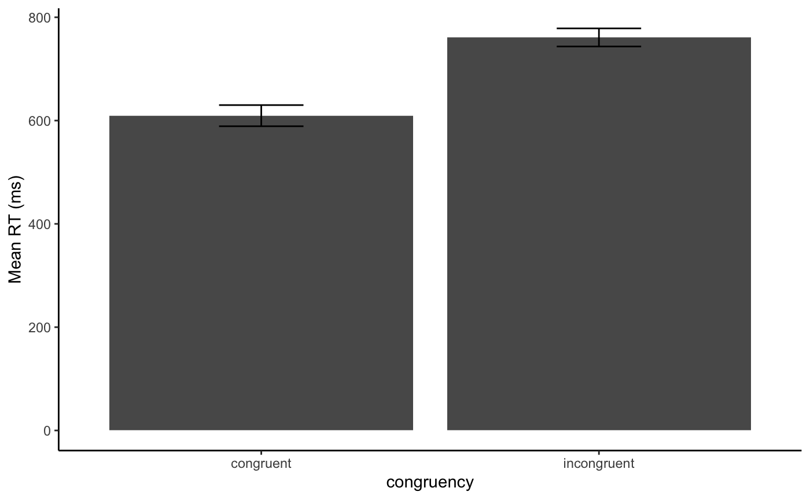

Load Libraries
## ── Attaching packages ───────────────────────────────────────── tidyverse 1.2.1 ──
## ✔ ggplot2 3.2.0 ✔ purrr 0.3.2
## ✔ tibble 2.1.3 ✔ dplyr 0.8.1
## ✔ tidyr 0.8.3 ✔ stringr 1.4.0
## ✔ readr 1.3.1 ✔ forcats 0.4.0
## ── Conflicts ──────────────────────────────────────────── tidyverse_conflicts() ──
## ✖ dplyr::filter() masks stats::filter()
## ✖ dplyr::lag() masks stats::lag()
##
## Attaching package: 'data.table'
## The following objects are masked from 'package:dplyr':
##
## between, first, last
## The following object is masked from 'package:purrr':
##
## transpose
Load data
all_data <- rbindlist(lapply(list.files(path="../experiments/Experiment 1/data",
pattern = "\\.csv",
full.names = TRUE),
fread))
Checks
check_summary <- all_data %>%
filter(is.na(stim_type) == FALSE,
rt != "null") %>%
mutate(rt = as.numeric(rt)) %>%
group_by(file_id) %>%
summarise(trial_count = n(),
accuracy = mean(correct),
mean_rt = mean(rt))
knitr::kable(check_summary)
| data_2019-10-07-09-13-45_58b428bw1q |
16 |
0.9375 |
670.5000 |
| data_2019-10-07-09-15-03_e0th8348ub |
16 |
1.0000 |
734.2500 |
| data_2019-10-07-09-20-50_slqxbagf5v |
16 |
1.0000 |
682.6250 |
| data_2019-10-07-09-28-43_5k7oef4l2n |
16 |
0.9375 |
685.8125 |
| data_2019-10-07-09-29-34_6gn2x8awo5 |
16 |
1.0000 |
675.4375 |
| data_2019-10-07-09-34-12_mdxo8ok0h8 |
16 |
1.0000 |
678.1250 |
| data_2019-10-07-09-34-56_ofju4gxtwg |
16 |
1.0000 |
775.0000 |
| data_2019-10-07-09-35-58_8cwp4efoy5 |
16 |
0.9375 |
820.8125 |
| data_2019-10-07-09-36-45_1immp6b11d |
16 |
1.0000 |
718.8750 |
| data_2019-10-07-09-37-31_l3ctlqv5mk |
16 |
1.0000 |
795.5625 |
Analysis
# get individual subject mean RTs
subject_means <- all_data %>%
filter(is.na(stim_type) == FALSE,
correct == TRUE,
rt != "null") %>%
mutate(file_id = as.factor(file_id),
stim_type = as.factor(stim_type),
rt = as.numeric(rt)) %>%
group_by(file_id,stim_type) %>%
summarise(subject_mean_rt = mean(rt))
# get global average of subject mean RTs and SEMs
plot_means <- subject_means %>%
group_by(stim_type) %>%
summarise(mean_rt = mean(subject_mean_rt),
sem = sd(subject_mean_rt)/sqrt(length(subject_mean_rt)))
# bar plot
ggplot(plot_means, aes(x=stim_type,y=mean_rt))+
geom_bar(stat="identity", position="dodge")+
geom_errorbar(aes(ymin = mean_rt-sem,
ymax = mean_rt+sem),
position = "dodge", width = 0.25)+
xlab("congruency")+
ylab("Mean RT (ms)")+
theme_classic()

# table
knitr::kable(plot_means)
| congruent |
609.5083 |
20.48856 |
| incongruent |
760.9712 |
17.53526 |
# ANOVA
aov_out <- aov(subject_mean_rt ~ stim_type + Error(file_id/stim_type), subject_means)
summary(aov_out)
##
## Error: file_id
## Df Sum Sq Mean Sq F value Pr(>F)
## Residuals 9 57210 6357
##
## Error: file_id:stim_type
## Df Sum Sq Mean Sq F value Pr(>F)
## stim_type 1 114705 114705 125.2 1.39e-06 ***
## Residuals 9 8244 916
## ---
## Signif. codes: 0 '***' 0.001 '**' 0.01 '*' 0.05 '.' 0.1 ' ' 1